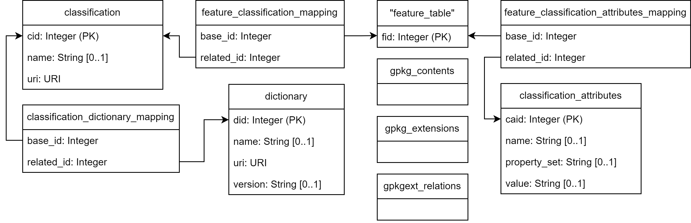

This plugin can be used to add a class and additional attributes to features by editing the attribute table in QGIS. To classify features, a data dictionary API can be queried to retrieve classes and associated attributes from a specific data dictionary. The plugin is implemented against the buildingSMART Data Dictionary (bsDD), but any data dictionary that follows this API structure can be queried.
If attributes exist, you can assign values to them before adding them to features.You can select only some features or classify all features in the layer with the same class and attributes.
If you have a GeoPackage, you can additionally extend it with the GeoPackage Related Tables Extension of OGC. You have to chose the source GeoPackage file of the loaded Layer. Additional Attribute Tables for class, attributes and dictionary are added to the file to enrich the semantics of the features. To see the additional attribute tables, you have to reload the GeoPackage file in QGIS.
The table schema is shown below:
